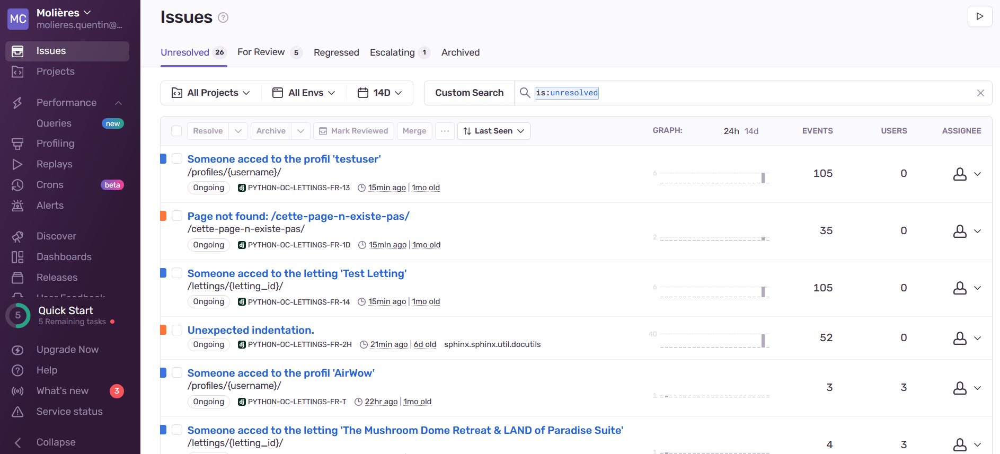

V. Structure des interfaces de programmation
Ce projet Django repose sur un ensemble d’interfaces de programmation (API) soigneusement conçues, qui constituent le pilier de notre stack technologique. Elles jouent un rôle central dans la gestion, la collaboration et le déploiement harmonieux de notre application, assurant un flux de travail fluide et efficace de bout en bout.
GitHub
GitHub est une plateforme en ligne qui permet aux développeurs de stocker, gérer et collaborer sur leurs projets de développement de logiciels. Elle offre des outils de gestion de code source, de suivi des problèmes, de documentation et de collaboration, rendant le travail en équipe plus efficace. Les développeurs peuvent héberger leurs projets, partager des ressources et contribuer à d’autres projets open source.
C’est à partir de la création de demande de fusion du code modifié via GitHub que notre processus de d’intégration continue est lancé.
CircleCI
CircleCI est une plateforme d’intégration continue qui automatise le processus de construction, de test et de déploiement des logiciels. Elle permet aux équipes de développement de détecter rapidement les erreurs, d’assurer la qualité du code et de livrer des applications fiables. CircleCI prend en charge de nombreux langages de programmation, environnements et intégrations tierces pour une personnalisation maximale du pipeline d’intégration continue.
Le fichier config.yml permet de configurer les étapes du workflow de notre processus d’intégration continue, celui-ci est déclenché à chaque push ou pull request sur la branche master.
1version: 2.1
2orbs:
3 python: circleci/python@2.0.3
4
5jobs:
6 build_and_test: # Construction et execution des tests pour validation
7 executor: python/default
8 steps:
9 - checkout
10 - python/install-packages:
11 pkg-manager: pip
12 - run:
13 name: Set environment variables
14 command: echo "SECRET_KEY=$SECRET_KEY" >> $BASH_ENV
15 - run:
16 name: Run tests
17 command: python -m pytest
18 - run:
19 name: Check test coverage
20 command: |
21 python -m pytest --cov
22 coverage report --fail-under=80
23 - run:
24 name: Check Flake8
25 command: flake8
26 - persist_to_workspace:
27 root: ~/project
28 paths:
29 - .
30
31 build_docker_image: # Construction de l'image et push vers Docker Hub
32 executor: python/default
33 steps:
34 - checkout
35 - setup_remote_docker: # Utilise remote Docker executor !
36 version: 20.10.14
37 docker_layer_caching: true
38 - run:
39 name: Build Docker image
40 command: docker build --build-arg SECRET_KEY=$SECRET_KEY -t qmolieres/oc-lettings:latest .
41 - run:
42 name: Push Docker image to Docker Hub
43 command: |
44 echo "$DOCKER_PASSWORD" | docker login -u "$DOCKER_USERNAME" --password-stdin
45 docker push qmolieres/oc-lettings:latest
46
47workflows:
48 test_my_app:
49 jobs:
50 - build_and_test
51 - build_docker_image
Docker
Docker est une plateforme de conteneurisation qui révolutionne la manière dont les applications sont développées, déployées et gérées. Elle permet d’emballer des applications et leurs dépendances dans des conteneurs légers et portables, assurant une uniformité et une reproductibilité de l’environnement d’exécution. Docker simplifie le développement, l’intégration et le déploiement d’applications, offrant une plus grande flexibilité pour les équipes de développement.
Le fichier Dockerfile permet de préciser les étapes permettant la création de notre image.
1# syntax = docker/dockerfile:1.2
2# Utilisez une image de base avec Python
3FROM python:3.12-rc-slim
4
5# Configurez l'environnement
6ENV PYTHONUNBUFFERED 1
7
8# Récupération de la SECRET_KEY (Remplacer par un ENV)
9ARG SECRET_KEY
10
11# Définissez le répertoire de travail
12WORKDIR /app
13
14# Copiez les fichiers de dépendances (requirements.txt) dans le conteneur
15COPY requirements.txt /app/
16
17# Installez les dépendances
18RUN pip install -r requirements.txt
19
20# Copiez le reste de l'application dans le conteneur
21COPY . /app/
22
23# Exécutez la commande collectstatic pour collecter les fichiers statiques
24RUN python manage.py collectstatic --noinput
25
26# Exposez le port sur lequel votre application fonctionne (par défaut : 8000)
27EXPOSE 8000
28
29# Commande pour exécuter votre application
30CMD gunicorn oc_lettings_site.wsgi:application --bind 0.0.0.0:8000
Ce fichier utilise une image Python de base, configure l’environnement, récupère la clé secrète en tant qu’argument, définit le répertoire de travail, copie les dépendances et le code source, installe les dépendances, collecte les fichiers statiques, expose le port 8000, et exécute l’application avec Gunicorn.
Afin de pouvoir déployer notre application en ligne, nous faisons un pull de cette image sur le cloud DockerHub. Cette image est ensuite transmise à Render pour son déploiement.
Sentry
Sentry est un service de gestion d’erreurs qui permet de suivre, de signaler et de résoudre les bogues et les problèmes dans les applications en temps réel. En fournissant une meilleure visibilité sur la qualité du logiciel, Sentry aide les développeurs à identifier, comprendre et corriger rapidement les erreurs, améliorant ainsi l’expérience utilisateur.
L’intégration et la configuration de Sentry dans l’application Django à été réalisé dans le fichier settings.py.
Render
Render est une plateforme de cloud computing qui simplifie le déploiement d’applications. Elle offre un environnement évolutif et hautement performant pour les développeurs, sans la nécessité de gérer les détails complexes de l’infrastructure. Render prend en charge une variété de langages de programmation, de bases de données et de services, permettant aux développeurs de se concentrer sur le développement de leurs applications plutôt que sur l’administration des serveurs. Cette plateforme propose un déploiement simple et des mises à jour continues, offrant ainsi une expérience fluide pour les développeurs et les utilisateurs finaux.
Comme précisé précédemment, un lien a été créé entre notre Docker Hub et Render afin que le déploiement soit réalisé automatiquement à chaque mise à jour de l’image.